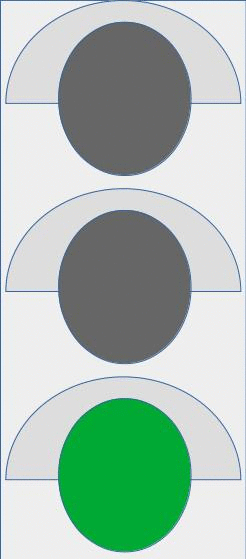

Diccionario
Consensuar


Tu diseño ha sido genial, pero cuando nos iniciamos en proyectos tan importantes debemos poner en común todo lo realizado, elegir lo mejor de cada diseño y construir el propuesta óptima para tu centro educativo.
Has realizado un excelente trabajo y sería una lástima que se quedase ahí. Es el momento de la puesta en común y de recopilar todo lo aprendido, para evaluar cuánto has aprendido.
Seguro que has aprendido un montón, ¡Enhorabuena!
Tu diseño ha sido genial,
pero cuando nos iniciamos en proyectos tan importantes
debemos poner en común todo lo realizado,
elegir lo mejor de cada diseño
y construir una propuesta óptima para tu centro educativo.
Has realizado un excelente trabajo
y sería una lástima que se quedase ahí.
Es el momento de la puesta en común y
de recopilar todo lo aprendido,
para evaluar cuánto has aprendido.
Seguro que has aprendido un montón,
¡Enhorabuena!
Cada grupo ha presentado un proyecto y todos habéis realizado un excelente trabajo. Ahora cabe la posibilidad de tomar lo mejor de cada uno para conseguir un proyecto excelente.
Junto al resto de la clase analizad todos los proyectos y consensuad un proyecto final, el óptimo.
Sería una lástima que se quede ahí, realizad una exposición e invitad al equipo directivo del centro y exponed vuestro informe conjunto para convencerles de la importancia de la reforma para contribuir a la sostenibilidad del planeta y la eficiencia energética del centro.
Cada grupo ha presentado un proyecto
y todos han realizado un excelente trabajo.
Ahora cabe la posibilidad de tomar lo mejor de cada uno
para conseguir un proyecto excelente.
Junto al resto de la clase
analizad todos los proyectos
y consensuad un proyecto final, el óptimo.
Sería una lástima que se quede ahí,
invitad al equipo directivo del centro
y exponed vuestro informe conjunto.
Si el centro tiene ya una planta fotovoltaica
haced hincapié en las medidas
de ahorro energético y de concienciación.
Pedid información a la dirección del centro
de modo que podáis comparar la instalación que hay
con la que habéis proyectado vosotros.
Si el centro no tiene una instalación fotovoltaica
es el momento de facilitar el proyecto a la dirección
y convencerles de las bondades de pasarse a la energía verde
y contribuir a la sostenibilidad del planeta.
 Es el momento de valorar el trabajo que habéis hecho en grupo, para ello disponéis de la siguiente herramienta. Es una diana de evaluación y tan solo tenéis que marcar en una escala de 1 a 4 el nivel al que creéis que habéis llegado en cada apartado.
Es el momento de valorar el trabajo que habéis hecho en grupo, para ello disponéis de la siguiente herramienta. Es una diana de evaluación y tan solo tenéis que marcar en una escala de 1 a 4 el nivel al que creéis que habéis llegado en cada apartado.
Responded con sinceridad y tomad nota para mejorar de cara a los siguientes retos.
Descargad el siguiente documento para realizar la evaluación.
Puedes descargar la ficha y rellenarla. Acuérdate de guardarla cuando acabes. También puedes imprimirla y rellenarla en papel.

Para valorar qué tal te ha ido con los diferentes conceptos matemáticos trabajados, vamos a utilizar una rutina de pensamiento que se llama "El semáforo". Como puedes ver, tienes tres zonas; en la zona verde debes colocar aquellos conceptos que has dominado y sobre los que no tienes dudas, en la zona amarilla sitúa los conceptos trabajados que comprendes pero que aún te siguen generando alguna duda, y por último arrastra hasta la zona roja los conceptos que no has llegado a comprender después de haberlos trabajado.
>
Para concluir, abre el Diario de Aprendizaje y completa su última página.
En este apartado guardarás información valiosa sobre la estrategia, en qué actividades las has aplicado, si ha sido útil y qué te ha resultado más difícil.
¡Sigue trabajando así! ¡Lo estás haciendo genial!
Obra publicada con Licencia Creative Commons Reconocimiento No comercial Compartir igual 4.0